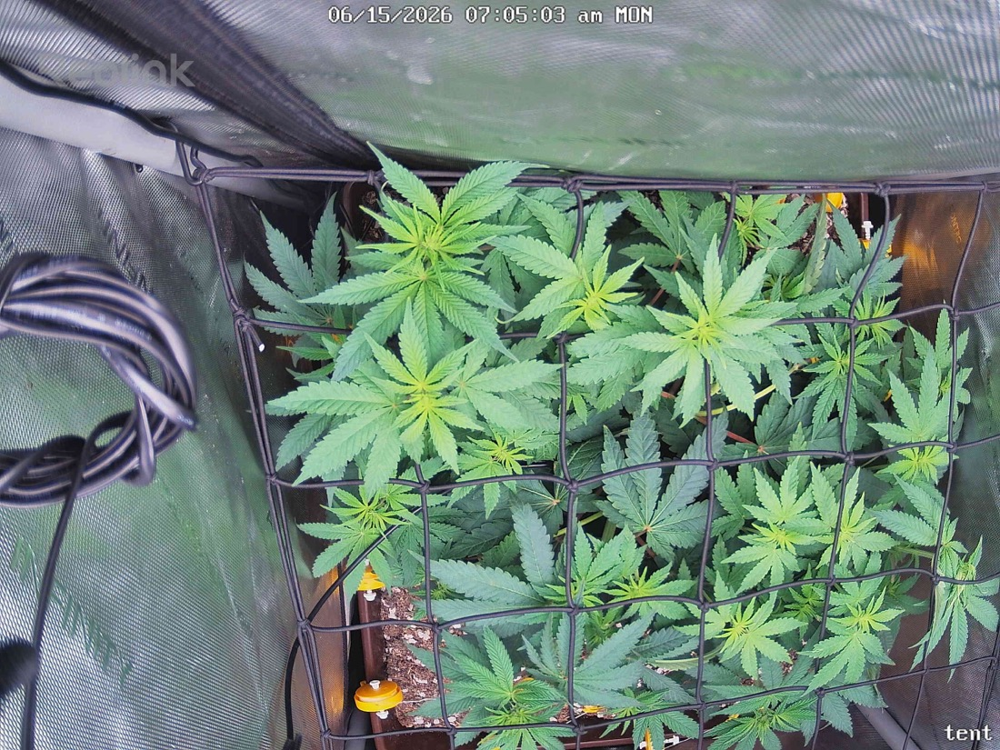

← All reports
Jun 15, 2026
Mon Jun 15, 2026 — 7:05 AM

Prognosis
Papaya Crush — Day 12 of flower (flipped 6/3), ~24h since last snap
- What changed: Very little in 24h, as expected — this is a testing-cadence comparison. Canopy is filling the SCROG net a bit more evenly; tops on the left/center have pushed slightly up into and through the squares. Overall structure flat and even, which is exactly what you want for a horizontal canopy.
- Color: Uniform medium-to-deep green across the canopy. No new yellowing, no interveinal chlorosis, no edge/tip burn at 700 PPFD center. A couple of lighter newer tops are normal fresh growth, not bleaching.
- Posture: Leaves flat and turgid, praying-ish at the tops, no tacoing or canoeing. No droop or clawing — water status looks dialed (last bottom-water 6/12, due ~6/16).
- Pests: Can't resolve mite stippling at this resolution, but no webbing, no fresh chewing, and consistent with your 6/14 "couldn't find any mites" check. Stay on schedule — you're due for the 3rd Green Cleaner round ~6/16 to catch the next egg-hatch wave; don't skip it just because they're not visible.
- Light/stretch: No signs of light stress at 700. Stretch is controlled and the net is doing its job. Plenty of bud sites forming across the tucked tops.
- Phase check: Right on track. ~12 days into 12/12, you should be in the stretch + early flower-site formation window — that's exactly what's pictured. Strong, even, multi-cola canopy from the topping + LST + SCROG work.
Suggested next actions: No corrective action needed. Keep the routine: bottom-water ~6/16 (~1 gal), apply 3rd Green Cleaner round lights-off, keep tucking new growth horizontally as it clears the net. Hold light at 700 for now — fine to nudge toward 750–800 once you confirm a few more days of zero stress.
Overall: Healthy, vigorous, well-trained plant tracking perfectly for early flower — testing window, nothing to fix.